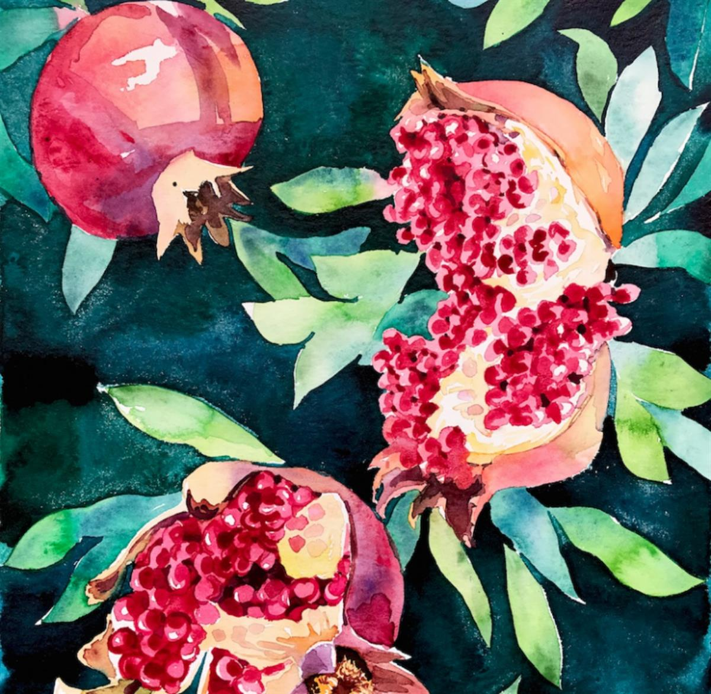
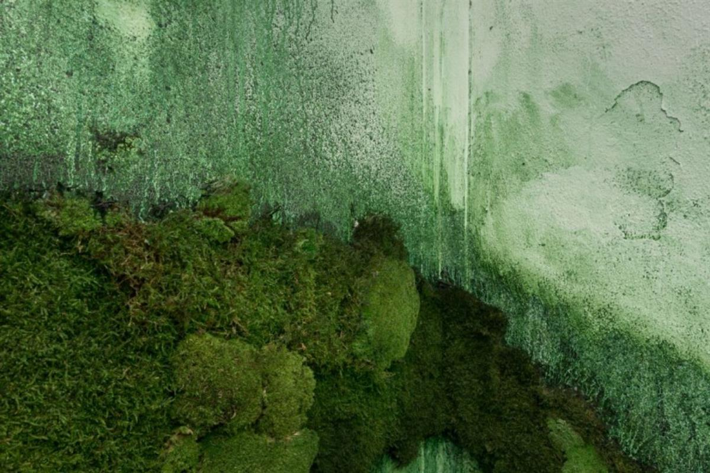
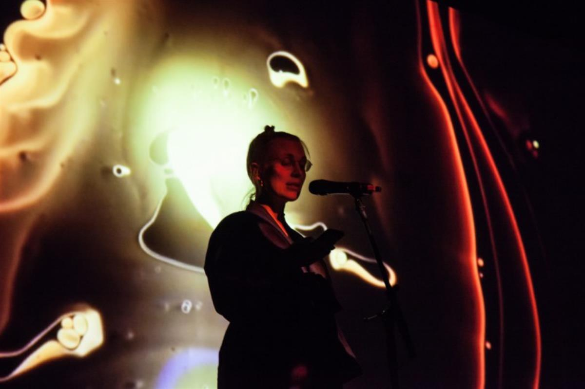
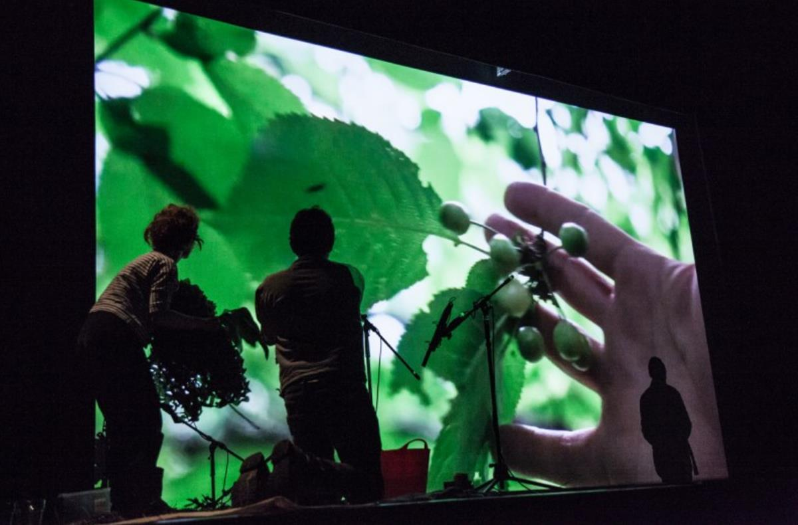
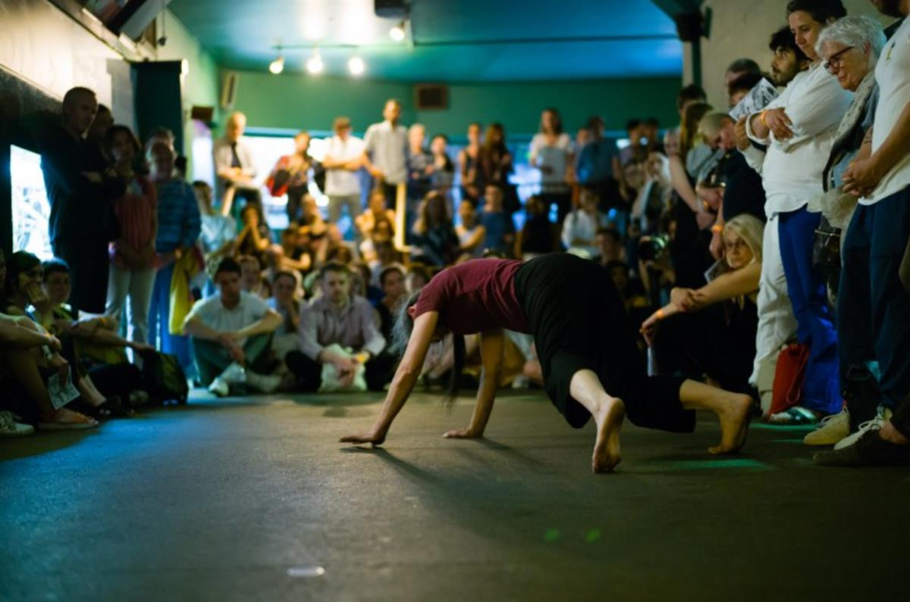
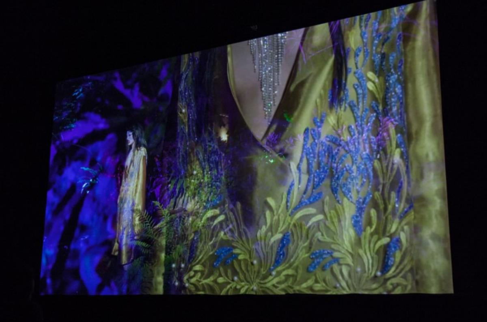
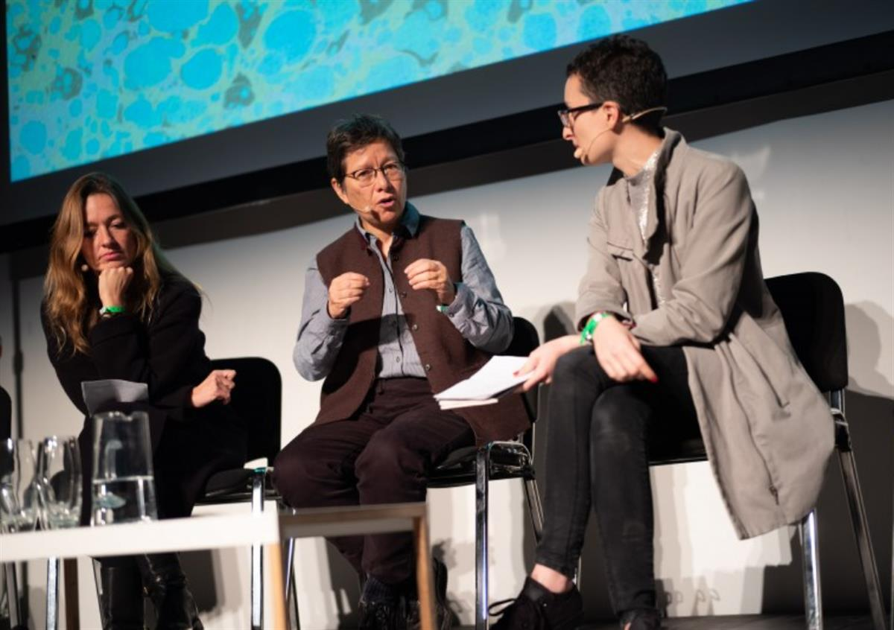
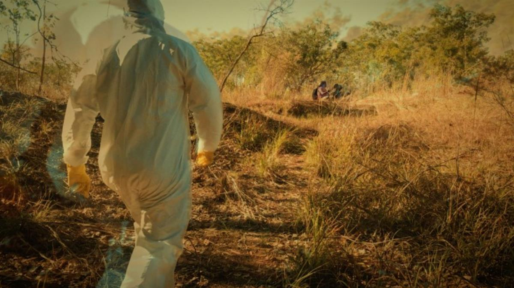
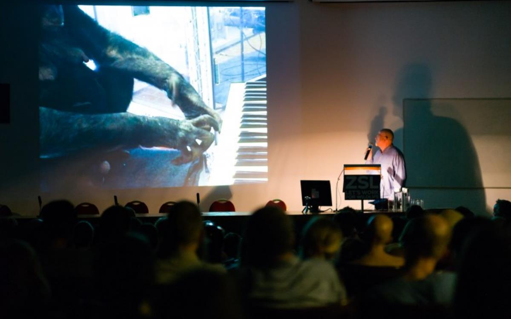
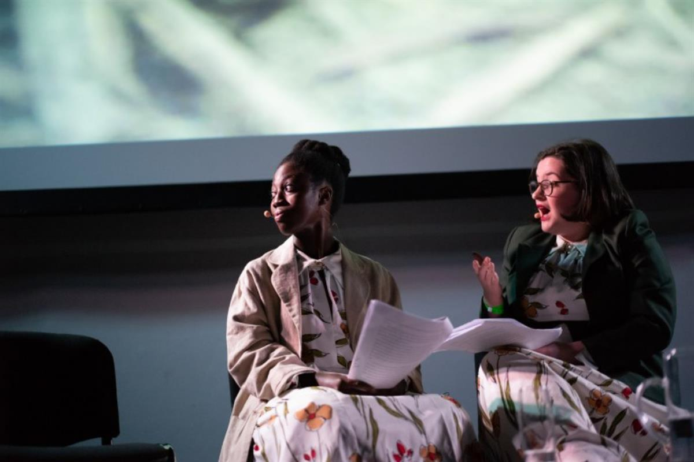

General Ecology is the Serpentine’s long-term and ongoing project researching complexity, posthumanism the environment and climate change. General Ecology manifests through publications, exhibitions, study programmes, radio, symposia and live events bringing together practitioners from the fields of art, design, science, literature and anthropology, among many others.
In 2014, the Serpentine’s Extinction Marathon was hailed by The Guardian as ‘The artworld’s bid to save the world’. Since this pivotal event, the Serpentine has continued its research around ecology, climate change, animality, human and artificial consciousness, wellbeing, extinction, technology and multi-scale complexity.
Thinking ecologically both within the Galleries (which are uniquely positioned within Kensington Gardens), across a network of individuals and organisations, as well as in a wider context, General Ecology works on myth-making and foundational narratives. Inviting artists, with their capacity to imagine and transform, into the core of scientific and organisational systems, General Ecology takes a speculative, as well as active, stance towards embedding deep ecological principles into the everyday. Purposely conducting research across the boundaries that have traditionally separated vegetal, human, non-human animal and artificial intelligence in science, General Ecology proposes a practice of entangled interconnections and symbioses: co-evolution over competition.
Throughout 2018 and 2019, General Ecology has presented the symposium series on interspecies consciousness, The Shape of a Circle in the Mind of a Fish, as well as the Serpentine Cinema programme On Earth** and The Serpentine Podcast: On General Ecology. A number of publications, reading groups, international study programmes and residencies are in preparation. In Spring 2019, inspired by the exhibition of Emma Kunz's works, General Ecology presents a programme of healing sessions, symposia and commissions reflecting on plant intelligence and the intersections of erotics and botany.
The General Ecology project is curated by Lucia Pietroiusti (Curator, Live Programmes and General Ecology) with Holly Shuttleworth (Producer, Live Programmes) and Kostas Stasinopoulos (Assistant Curator, Live Programmes). The Shape of a Circle in the Mind of a Fish is co-curated with writer and editor Filipa Ramos. Visual identity by artist Giles Round.
AUDIO LINKS:
PODCAST
The Serpentine Podcast: On General Ecology
The Serpentine Podcast: On General Ecology - Episode 1: In Our Bodies
SOURCE: SERPENTINE GALLERIES

Alex Cecchetti Melograni (love probability), 2019 Watercolour on paper, 30 x 40 cm © Alex Cecchetti

Jenna Sutela Sporulating Paragraph, 2017 Photo: Istvan Virag © Punkt Ø/Momentum 9 Courtesy of the artist and Momentum 9

Jenna Sutela, Oceanic Feeling, PLANTSEX, 12 April 2019, in collaboration with Institut français du Royaume-Uni and Mal Journal © Talie Rose Eigeland 2019

Alex Cecchetti, Belladonna, PLANTSEX, 12 April 2019, in collaboration with Institut français du Royaume-Uni and Mal Journal © Talie Rose Eigeland

Claire Filmon performing Simone Forti's Sleep Walkers / Zoo Mantras at The Shape of a Circle in the Mind of a Fish, Part 1: Language, 28 May 2018. Photo: Plastiques Photography

Victoria Sin, If I had the words to tell you we wouldn't be here now, PLANTSEX, 12 April 2019, in collaboration with Institut français du Royaume-Uni and Mal Journal © Talie Rose Eigeland

From left: Filipa Ramos, Anna Tsing, Lucia Pietroiusti - The Shape of a Circle in the Mind of a Fish, Part 2: we have never been one, 1 December 2018, Ambika P3 © Plastiques Photography

Karrabing Film Collective, The Mermaids: Mirror Worlds (2018)

Peter Gabriel at The Shape of a Circle in the Mind of a Fish, Part 1: Language, 28 May 2018. Photo: Plastiques Photography

Gruff Theatre performing Anna Tsing's Golden Snail Opera at The Shape of a Circle in the Mind of a Fish, Part 2: we have never been one, 1 December 2018, Ambika P3 Photo: Plastiques Photography
SOURCE: SERPENTINE GALLERIES